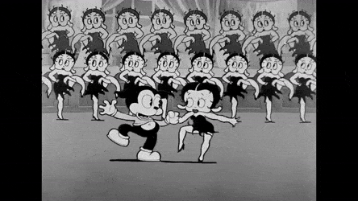

The history of the arts and sciences could be written in terms of the continuing process by which new technologies create new environments for old technologies. The old technology, as the content of the new, quickly becomes tidied up into an art form, such as is now happening to film since it has become the content of TV.
Marshall McLuhan, New Media & the Arts, 1964
It would be naive to assume that vocative regime is the only mode of popular music consumption by a wide audience. The data shows it is not even a dominant mode — YouTube video streaming makes up 46% of all streaming music worldwide (IFPI Global Music Report 2018, p. 27). Considering the omnipresence of Spotify with its massive 50 million songs catalogue, lower requirement for the bandwidth than YouTube, as well as assured legality of the content consumption, YouTube’s dominance leads to a safe assumption that the reason for the preference lies in the visual component.
Music video is a fairly recent format, even for the relatively young music industry. Traditionally, popular music was available though broadcast (radio, television), recordings (records, cassette tapes, jukeboxes, and other media), and live performances (concerts, gigs).
The first attempts to combine songs and images came in the 1930s, most notably by Max Fleischer Studio, that would cut their Betty Boop cartoons to the songs of Cab Calloway and Louis Armstrong, amongst others.
Later in the 40s Panoram “Soundies”, jukeboxes with a screen which could show 3 minute long films, were the first examples of music and image converging technology that was able to alter the atmosphere of the environment — Soundies were placed in public spaces, such as hamburger joints, stations, etc. and their presence had such positive impact, that within 7 years Mills Novelty Company, the manufacturer of Soundies, has placed 1850 machines across the United States (Kelley, 2015, p. 72).
Scopitone — an improved variation of Soundies from France was the true first forerunner of music videos. With colour 16mm film projection and high fidelity magnetic track the devices were specifically designed as a kind of music clips jukebox. One of the first truly innovative music clips — Bob Dylan’s Subterranean Homesick Blues was filmed in 1965 specifically for Scopitone format as a way to promote the album (Beattie, K. and Astruc, A., p. 31). With a dedicated format and the method of dispersion, the format of music clips has started to become popular with the artists and record labels as the way to promote albums. Later the format of the music clips has been adopted by the broadcast television.
With this phrase on the 1st of August 1981 the first 24 hours specialised programming TV channel focused solely on music (initially rock music) — MTV — was launched. The first music video MTV has broadcasted, was a symbolically gestured Video Killed the Radio Star by The Buggles. Despite the initial hesitations by Warner and the industry in general, the channel has become an instant success (Munk, 2004, p. 93). This is when music video as the format has received its true prominence in the music industry, and in the contemporary culture itself.
Music videos have become for the bands not only a way to attract new audience, but an integral part of their artistic identity. Indeed, the typical music video credits include only artist and record label, eschewing the ac- knowledgement of other roles in the production is an indicator of push of the celebrity culture (Aufderheide, 1986, p. 62) and the mechanicity of the process.
Because of their centrality in the bands’ success, as well as high conductivity for marketing messages, music videos have become a product in itself. The audience, who Bob Pittman, the man behind MTV has famously characterised as “television babies, who grew up on TV and rock and roll” (Denisoff, p. 45) have embraced the new audiovisual sensibility. Advertisers have sensed early the emotional response of the audience to the music videos and have embraced the visual language of the format. In return the musicians, understanding the efficiencies that are inherent to commercials, have embraced these rules as well, thus colliding the commercials and music videos into one large hyperreal space, where the audience was unable, or unwilling to distinguish between entertainment and the sales pitch. The new reality creates experiences with symbols, that stand in for something else in the real world, thus creating an entirely different world of different meanings produced by these symbols, and new experiences, that are completely detached from the actual ones – hyperreality (Baudrillard and Poster, 2007, p. 143).
Just like Scopitones have lost their relevance with the advent of broadcast television, so has broadcast television’s importance has been diminished with the advent of the internet. Web 2.0 has pushed MTV out of music niche into reality TV, and YouTube as an omnipresent channel had created a video turn at around 2008 (Holt, 2001, p. 50). With the rising importance of YouTube as a mode of distribution, the format of the music videos started to change as well, from wider range of audio-visual experimentations, to self produced videos, to music videos with high level of “cinemacity”1 (ibid, p. 52).
In 2010 two visual artists from Sacramento, California, Zack Hill and Stefan Burnet, have released the first album of their band Death Grips. What fol- lowed then for the next decade was a deliberate technologically enabled act of nihilism of artistic goals, principles and merits, which can be defined as retreatism within the frameworks of Merton’s Anomie theory2. Individuals considered to be a part of retreatist group from sociological perspective are viewed as true “aliens”(Merton, 1938, p. 676), and true to the definition, multiple interviews with the band members, as well as their actions, have demonstrated their disdain for the culturally induced meritocratic principles and aspirations. Substance abuse, occasional vagrancy, breaches of contrac- tual obligations with record labels3 and tour commitments, use of explicit imagery4, etc., are commonplace acts of the band.
The format of Death Grips works follows the standard principle of many contemporary bands: music, music videos, gigs, (somewhat limited) com- munication with fans via social media. What is different however, is the content: cryptic lyrics filled with violent and convoluted messages, visceral delivery, and confusing music videos, of only what could be characterised as, extremely low production value. The videos, at least those, that have any animated elements in them, seem to be an assemblage of random items and scenes that are built around atmosphere by means of form, rather than inter- textual relation with the lyrical component of the track. Additionally the actual production and post-production are visibly rough, clearly avoiding the common trope of music videos in attempting to imitate the reality.
Of course the use of desecrated visuals in music videos is nothing new — scratch video was an entire genre, popular in the 80s, that revolved around the use of damaged, recycled, reused and reappropriated material. With the fast paced editing, ironic stance against commercial and pop-cultural icons, and often direct social criticism, scratch videos were a typical product of 80s postmodernism, and despite its attempts to criticise and challenge the modernist aesthetics, the scratch videos were fitting perfectly within the aesthetic norms of the visually dominating culture. Their existence was within the realms of artistically controlled meaning and attempts to manipulate the audience into accepting these meanings. The video material uploaded by Death Grips on their YouTube channel are none of that.
Generally the band’s music videos can be classified in following categories:
The last category is very peculiar — unlike many contemporary music videos that have overload of intertextual connection with the world and within itself, here elements in the frame are completely isolated from any context and are suspended within their own syntagmatic relationship. The effect of this suspension is hermeneutic coding that create the aura of mystery, the uncanny. However, the meaning is entirely open-ended and is left entirely to the reader to find it, or not. This creates a typical postmod- ern expression with displaced space and time continuum, albeit created in a rather unusual style for the medium. One way or the other, instead of the audiovisual convergence, which is the norm for current state of music videos, the band is separating these streams, diverging them. This type of revolt against the visual by its own means is the recurring pattern in the bands videos.
Another interesting category is the third — while intertextually the iconic “frames” are meaning producing devices on both indexical and sym- bolic levels, the dichotomy between the high energy of MC Ride’s delivery and the banality of the “frames”, such as in videos Double Helix and Inanimate Sensation, are so striking, that the audience hardly can make mistake about the single most important element on the screen. The mockery these videos make of the constraints of scopic regime are explicit and deliberate.
As mentioned previously, the video works look like the creators went through a great effort to wipe any possible meanings out of anything non- song related. Whether deliberately or not, the band is attempting to sepa- rate music from the visual, back to its pre-MTV condition, akin to Subterranean Homesick Blues, where the centrality of Bob Dylan and his perfor- mance was not only dominant, but also the single meaning producing element5. Perhaps this also could explain the overwhelming number of tracks with nothing but the album cover for the visual on their YouTube channel, or the videos with completely irrelevant animated objects. Lev Manovich claims that according to Dziga Vertov’s theories “film can overcome its in- dexical nature though montage, by presenting a viewer with objects that never existed in reality”(Manovich, 2001, p. xviii). With aggressive post- production technique and denial of direct symbolic connections, the videos create empty space for indexical relationship with the objects on the screen. The most exciting part of band’s visual work is the clear attempt to reject the visual dominance over the music, as well as the attempt to reduce the hyperreal by creating visibility of division between different components of the music video.
In order to demonstrate the underwhelming power of the video component in the Death Grip videos I have created an artefact — a set of “simulations” of Death Grips’ music videos6. These simulations are essentially a completely isolated visual component of the respective music videos — removed are the music, the lyrics, the sound, the artists themselves, their performance, the timeline. What is left is the superficial visual frame, that represents the only relatively stable narrative element in their music videos. The purpose is to demonstrate tasks carried out by the band’s performance versus the tasks done by the visuals.
The bands’ performance within the frame has been replaced with the direct webcam stream of the reader/viewer. The viewer then is invited to observe the personal reaction to the seen, altering own behaviours on the screen. The viewer is also encouraged to attempt to imitate the band members as well. This is a highly experiential experiment, and a lot of effort was committed to prevent the viewer to attempt to view the experiment without actual participation, i.e., not having the face in the camera.
The artefact was built using comparable principles, as used by the band in creating the music videos. Further below I will outline the similarities:
| band | artefact |
|---|---|
| Death Grips are notorious for having extremely low budget music videos. An interview with Zach Hill, the creative driving force behind the band, shows budgets of $ 20 or less(Hill and Lee, 2012). This comes as a contrast to the high production music videos sponsored by major record labels. | Death Grips are notorious for having extremely low budget music videos. An interview with Zach Hill, the creative driving force behind the band, shows budgets of $ 20 or less(Hill and Lee, 2012). This comes as a contrast to the high production music videos sponsored by major record labels. |
| Interviews with the band and the observation show the predominant use of opensource and free tools7, materials and locations. | Tools and services to create the artefact were deliberatly chosen from the range of free and opensource ones8. |
| At least in one music video – Takyon (Death Yon) — the band discloses the use of location and tools of questionable legitimacy and moral candour (Hill and Lee, 2012). | The “frames” for Inanimate Sensation and Double Helix simulators were taken from the YouTube
stream
of the band with no explicit permis- sions or notices issued to the band or the record
label. The items are presumed to be used as “fair use” but code is designed to be replace or remove these elements at the first notice from the copyright owner. Maybe. |
| All of the band’s videos are DIY. No professional video equipment or ser- vices are used. | The artefacts were coded by the author personally with no outside help. Some unusual software design decisions were made due to the fact that JavaScript is not the language that author particularly familiar with. |
| True to hip hop genre a lot of music is sampled, with sources of samples easily identifiable. Most of the albums were also made available for free by the band. | All code is also placed freely on GitHub under WTFPL (Do What The Fuck You Want Public License) – the most permissive public license possible – the creator claims nothing and takes no responsibility. This is a complete surrender of the work to the public domain(WTFPL – Do What the Fuck You Want to Public License). |
The artefact can be found under following URL:
github.com/evilcloud/Death-Grips-simulator1. As an example, Telephone by Lady Gaga and Imma Be/Rock That Body by Black Eyed Peas are narrative driven 10 minutes long audiovisual projects
2. American sociologist Robert Merton has defined 5 types of personal adaptation to disparity between culturally accepted goals and socially recognised means of achievement of these goals: Conformity, Innovation, Ritualism, Retreatism, and Rebellion
3. In 2013 the band, while under the contract with Epic Records, has released a long awaited album privately, ahead of schedule, free of charge, on BitTorrent platform in the full violation of the contract with the record label (Hawkins, 2016, p. 1)
4. Album cover for Deep Web No Love is an uncensored photograph of one of the band member’s penis with the title of the album written on it with a marker
5. In fact, amongst few other elements on that film clip, the character in the background, who looks like a rabbi is none other than the famous poet Allen Ginsberg talking to equally famed songwriter Bob Neuwirth. Precisely as in music videos under discussion, these characters have not added any particularly radical meanings to the final product
6. There are three “simulations” of the time of writing this paper
7. Opensource 3D modeling software Blender can be seen in Inanimate Sensation, for instance
8. GitHub and Openprocessing are free tier specialised hosting platforms. p5.js is an opensource JavaScript framework, just as JavaScript itself. The enumeration function in the No Love simulator was taken from public domain (credited)